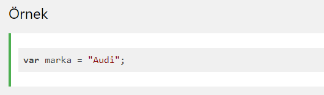
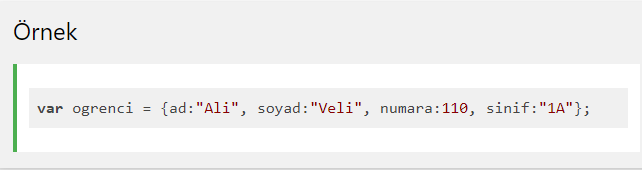
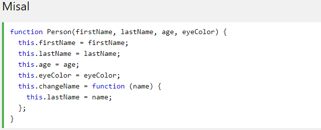

JavaScript programlama dilinde 5 tane veri tipi ve 3 tane referansı ifade eden Object tipi vardır. Veri tipleri Number, String, Boolean, Undefined, ve Null(bu da bir obje)dir. Fonksiyon, dizi, nesne (object) gibi refrensları ifade eden Object tipler bulunmaktadır.
JavaScript'te neredeyse "her şey" bir nesnedir.
•Booleans nesne olabilir ( new anahtar kelime ile tanımlanmışsa )
•Sayılar nesne olabilir ( new anahtar kelime ile tanımlanmışsa )
•Dizeler nesne olabilir ( new anahtar kelime ile tanımlanmışsa )
•Tarihler her zaman nesnedir
•Matematik her zaman nesnedir
•Normal ifadeler her zaman nesnedir
•Diziler her zaman nesnedir
•Fonksiyonlar her zaman nesnedir
•Aşağıdaki basit kod bir değişkene tek bir değer atamaktadır:
•Nesneler birden fazla değeri saklayabilirler. Örneğin Marka, Model, Renk gibi değerleri bellekte saklamak isteseydik şu konu yazabilirdik:
örneği inceleUyarı: Kodu incelemek için örneği incele dedikten sonra CTRL+U tuşuna basınız
•Bu şekilde pek çok değeri saklayabiliriz. JavaScript nesne için özellikler, ad:değer çifti şeklinde yazılır ve virgün ile birbirinden ayrılır.
JavaScript içindeki ad:değer çiftleri özellik (property) olarak adlandırılır.
•Özellik, nesne içinde veri sakladığımız alanlardır.
JavaScript ile nesne tanımlarken (yaratırken) öncelikle nesnemize bir ad veririz. Daha sonra = simgesi ile {} simgeleri arasına özellikleri listeleriz.
örneği inceleUyarı: Kodu incelemek için örneği incele dedikten sonra CTRL+U tuşuna basınız
•Tanımlama yaparken boşluklar ve satır başları önemsizdir. Nesneyi yukarıdaki gibi de tanımlayabiliriz.
Bir JavaScript nesnesinin özelliklerine iki farklı şekilde erişebilirsiniz: nesne.ozellikAdi veya nesne["ozellikAdi"]
Yani dilerseniz nesnenin adını yazıp, sonuna nokta ekleyip özelliğin adını yazabilirsiniz veya ikinci yöntem olarak köşeli parantez içinde nesne adını tırnak içine alarak nesne özelliğine erişebilirsiniz.
örneği inceleUyarı: Kodu incelemek için örneği incele dedikten sonra CTRL+U tuşuna basınız
JavaScript nesne içinde özellik saklayabildiğiniz gibi, metod de saklayabilirsiniz.
JavaScript nesnesi içinde metod saklamak istersek şu söz dizimini kullanırız: metodAdi:function(){}
JavaScript nesnesi içindeki metodu şu şekilde çağırırız: nesneAdi.metodAdi();
örneği incele
Uyarı: Kodu incelemek için örneği incele dedikten sonra CTRL+U tuşuna basınız
Uyarı: Kodu incelemek için örneği incele dedikten sonra CTRL+U tuşuna basınız
•Yapıcı işlevlerini büyük harfli ilk harfle adlandırmak iyi bir uygulama olarak kabul edilir.
Bazen aynı "tipte" birçok nesne oluşturmak için bir " taslak " lazım .
Bir "nesne türü" yaratmanın yolu, bir nesne yapıcı işlevi kullanmaktır.
Yukarıdaki örnekte function Person() , bir nesne yapıcı işlevidir.
Aynı türden nesneler, yapıcı işlevini şu new anahtar sözcükle çağırarak oluşturulur :
Uyarı: Kodu incelemek için örneği incele dedikten sonra CTRL+U tuşuna basınız
JavaScript'te, çağrılan şey this , koda "sahip" olan nesnedir.
this Bir nesnede kullanıldığında değeri nesnenin kendisidir.
Bir yapıcı işlevinde this bir değer yoktur. Yeni nesnenin yerine geçer. this Yeni bir nesne oluşturulduğunda değeri yeni nesne olur.
Mevcut bir nesneye yeni bir özellik eklemek kolaydır:
örneği inceleUyarı: Kodu incelemek için örneği incele dedikten sonra CTRL+U tuşuna basınız
•Özellik myFather'a eklenecek. Anneme değil. (Başka hiçbir nesneye değil).
Mevcut bir nesneye yeni bir yöntem eklemek kolaydır:
örneği inceleUyarı: Kodu incelemek için örneği incele dedikten sonra CTRL+U tuşuna basınız
•Yöntem myFather'a eklenecektir. Anneme değil. (Başka hiçbir nesneye değil).
Varolan bir nesneye yeni bir özellik eklediğiniz gibi, nesne oluşturucuya yeni bir özellik ekleyemezsiniz:
örneği inceleUyarı: Kodu incelemek için örneği incele dedikten sonra CTRL+U tuşuna basınız
Bir kurucuya yeni bir özellik eklemek için, kurucuyu yapıcı işlevine eklemeniz gerekir:
Uyarı: Kodu incelemek için örneği incele dedikten sonra CTRL+U tuşuna basınız
Bu şekilde nesne özellikleri varsayılan değerlere sahip olabilir.
Yapıcı işleviniz ayrıca yöntemleri de tanımlayabilir:
örneği inceleUyarı: Kodu incelemek için örneği incele dedikten sonra CTRL+U tuşuna basınız
Varolan bir nesneye yeni bir yöntem eklediğiniz gibi, nesne oluşturucuya yeni bir yöntem ekleyemezsiniz. Nesne yapıcısına yöntem ekleme, yapıcı işlevi içinde yapılmalıdır:
ChangeName () işlevi, adın değerini kişinin lastName özelliğine atar.
Uyarı: Kodu incelemek için örneği incele dedikten sonra CTRL+U tuşuna basınız
JavaScript "yerine" tarafından bahsetme şeklini kişi bilir bu ile myMother .
JavaScript yerel nesneler için yerleşik yapıcılara sahiptir:
örneği inceleUyarı: Kodu incelemek için örneği incele dedikten sonra CTRL+U tuşuna basınız
Normalde, dizeler ilkel olarak oluşturulur: var firstName = "John"
Ancak dizeler, new anahtar kelime kullanılarak nesne olarak da oluşturulabilir : var firstName = new String("John" )
Normalde sayılar ilkel olarak oluşturulur: var x = 123
Ancak sayılar, new anahtar kelime kullanılarak nesne olarak da oluşturulabilir : var x = new Number(123)
Normalde, booleans ilkel olarak oluşturulur: var x = false
Ancak booleans new anahtar kelimesini kullanarak nesne olarak da oluşturulabilir : var x = new Boolean(false)
Tüm JavaScript nesneleri, özellikleri ve yöntemleri bir prototipten devralır.
örneği inceleUyarı: Kodu incelemek için örneği incele dedikten sonra CTRL+U tuşuna basınız
Ayrıca öğrendim değil varolan nesne yapıcı yeni bir özellik ekleyin:
örneği inceleUyarı: Kodu incelemek için örneği incele dedikten sonra CTRL+U tuşuna basınız
Bir kurucuya yeni bir özellik eklemek için, kurucuyu yapıcı işlevine eklemeniz gerekir:
örneği inceleUyarı: Kodu incelemek için örneği incele dedikten sonra CTRL+U tuşuna basınız
Tüm JavaScript nesneleri bir prototipin özelliklerini ve yöntemlerini devralır:
• Date nesneler miras alır Date.prototype
• Array nesneler miras alır Array.prototype
• Person nesneler miras alır Person.prototype
Date nesneler, Array nesneler ve Person nesneler miras alır Object.prototype
Bazen belirli bir türdeki mevcut tüm nesnelere yeni özellikler (veya yöntemler) eklemek istersiniz.
Bazen bir nesne yapıcısına yeni özellikler (veya yöntemler) eklemek istersiniz.
JavaScript prototype özelliği, nesne yapıcılarına yeni özellikler eklemenize olanak tanır:
örneği inceleUyarı: Kodu incelemek için örneği incele dedikten sonra CTRL+U tuşuna basınız
JavaScript prototype özelliği ayrıca nesne oluşturucularına yeni yöntemler eklemenize izin verir:
örneği inceleUyarı: Kodu incelemek için örneği incele dedikten sonra CTRL+U tuşuna basınız
!!!Yalnızca kendi prototiplerinizi değiştirin . Standart JavaScript nesnelerinin prototiplerini asla değiştirmeyin.